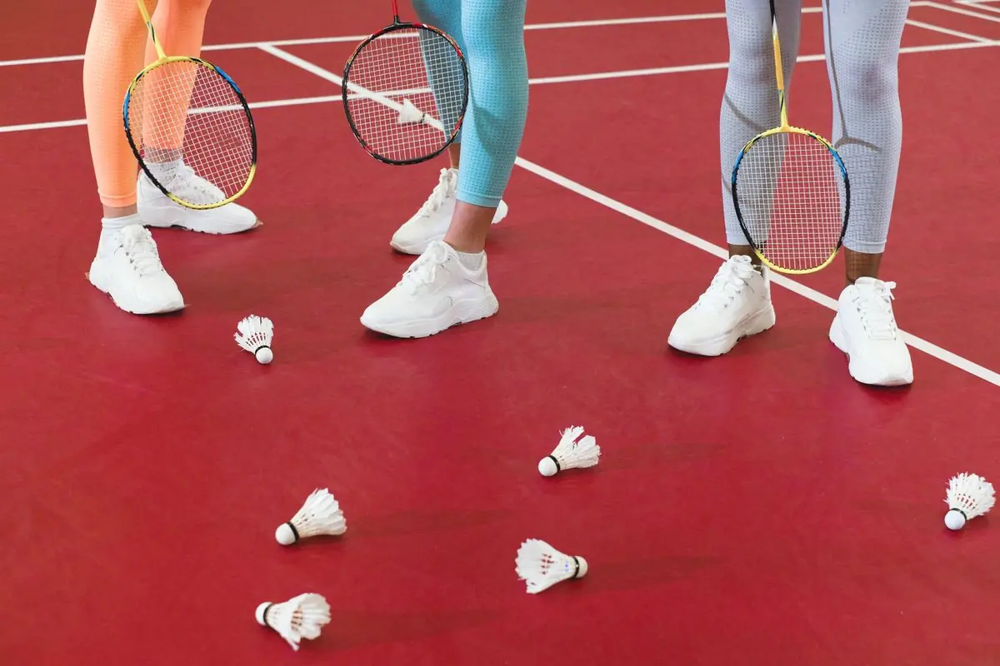
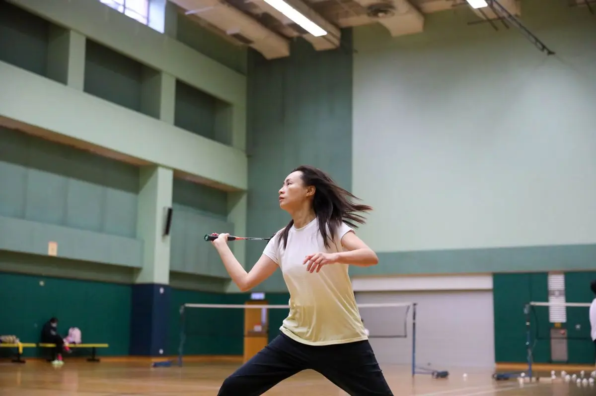

أساسيات الدوران والتبديل في الزوجي المختلط
تعلم كيفية التبديل السريع بين المواقع الأمامية والخلفية، وكيفية تنسيق الحركات مع شريكك لتغطية الملعب بفعالية. سنشرح لك التقنيات الأساسية التي تحتاجها للبدء.


كتبه
فريق الشاهين الذهبي للمحتوى التحريري
فريق التحرير والمراجعة
متخصص في تقديم إرشادات عملية وموثوقة حول تكتيكات الدوران في الزوجي المختلط بالريشة الطائرة.
لماذا الدوران والتبديل مهم جداً؟
في الزوجي المختلط، ما تقوم به في أول 30 ثانية من المباراة يؤثر على كل شيء بعدها. الدوران والتبديل بين المواقع ليس مجرد حركة عشوائية — إنها استراتيجية منظمة تساعدك وشريكك على السيطرة على الملعب.
نحن نتحدث عن كيفية تحرك اللاعب الأمامي للخلف بسرعة والخلفي للأمام، وكيف تتبادلان الأدوار دون التصادم ببعضكما أو ترك أماكن فارغة يستغلها الخصم. هذا ما يفصل بين الفريق المتناسق والفريق الذي يبدو عشوائياً.
النقطة الأساسية
الدوران الجيد يعني تغطية 100% من الملعب دائماً. إذا كان لديك فجوة بين موقعك وموقع شريكك، الخصم سيجدها ويستغلها.
الخطوات الأساسية للتبديل السريع
التبديل يبدأ قبل حتى ضرب الريشة. عندما يرمي الخصم الريشة، أنت وشريكك يجب أن تكونا مستعدين للحركة. اللاعب الأمامي يراقب الريشة القادمة، واللاعب الخلفي يستعد للتراجع إذا لزم الأمر.
هنا الجزء المهم: الحركة يجب أن تكون متزامنة . إذا تحرك الأمامي للخلف، الخلفي يجب أن يتحرك للأمام في نفس الوقت. ليس واحد بعد الآخر — في نفس الوقت.
الاستعداد الأولي: قف على خطوط الملعب — الأمامي قريب من الشبكة، الخلفي بعيد. المسافة بينكما حوالي متر ونصف.
قراءة الريشة: راقب اتجاه الريشة. هل تذهب عالية أم منخفضة؟ هل تحتاج دفاع من الأمام أم الخلف؟
الحركة المتزامنة: اللاعب الذي سيضرب يتحرك للريشة، والآخر يعيد تموضعه لتغطية المنطقة التي تركها.
العودة للموضع: بعد الضربة، عد للموضع الأساسي بسرعة. لا تنتظر — قم بخطوة صغيرة للاستعداد للريشة القادمة.

معلومة تهمك
هذا المقال يقدم معلومات تعليمية حول تقنيات الريشة الطائرة. النصائح المذكورة هنا مقترحة عامة وقد تختلف الطريقة المثالية حسب مستويات اللاعبين المختلفة والظروف المحلية. للحصول على توجيهات شخصية دقيقة، يفضل التدرب تحت إشراف مدرب متخصص.
نصائح لتحسين التبديل السريع
أول شيء تلاحظه عند الفريق الجيد هو السلاسة. ما تراه ليس جهد مرئي — بل حركة طبيعية. كيف يصل الفريق لهذا المستوى؟ بالتدريب المنتظم والتركيز على التفاصيل.
التدريب على التوقيت: مارس الدوران مع شريكك 50-100 مرة في التدريب. ركز على التوقيت، لا السرعة في البداية. السرعة تأتي لاحقاً.
التواصل غير اللفظي: ابحث عن طريقة لإشارة لشريكك. نظرة، إيماءة صغيرة، أي شيء يساعده على فهم نيتك.
الخطوات الصغيرة: لا تأخذ خطوات كبيرة. خطوات صغيرة متكررة تعطيك التحكم والسرعة في نفس الوقت.

تمرين عملي: محاكاة الدوران
إذا أردت أن تبدأ الآن، إليك تمرين بسيط يمكنك فعله مع شريكك:
قفا في مواضعكما الأساسية بدون ريشة. تدربا على الحركة فقط — أمامي يتحرك للخلف، خلفي يتحرك للأمام.
أضيفا الريشة. الخصم يرمي الريشة، أنتما تتحركان وتردان. ركزا على التوقيت، لا على السرعة.
زيادة السرعة تدريجياً. بعد 10 دقائق، يجب أن تشعرا بتحسن واضح في التنسيق.
الخلاصة: ابدأ الآن
الدوران والتبديل في الزوجي المختلط ليس معقداً كما يبدو. هو مجرد تنسيق بينك وبين شريكك. تحرك معاً، غطيا الملعب معاً، وافزا معاً. هذا كل شيء.
ابدأ بالأساسيات التي شرحناها اليوم. مارس التمرين البسيط. بعد أسبوعين من التدريب المنتظم، ستلاحظ الفرق. فريقك سيصبح أصعب للعب ضده.
تريد معرفة المزيد؟
اقرأ عن التمويهات والضربات المفاجئة في المنطقة الأمامية، أو تعلم استراتيجيات الدفاع الخلفي.
مقالات ذات صلة

التمويهات والضربات المفاجئة في المنطقة الأمامية
تقنيات التمويه والضربات المنخفضة والمرتفعة لخداع الخصم وكسب النقاط من المنطقة الأمامية للملعب.

الدفاع الخلفي والتعافي السريع
استراتيجيات الدفاع من الخط الخلفي والتحركات السريعة للعودة إلى موقعك بعد كل ضربة.

خطط التشكيل والمواقع الاستراتيجية
فهم تشكيلات الملعب المختلفة واختيار المواقع الأمثل بناءً على نقاط قوة فريقك وضعف الخصم.